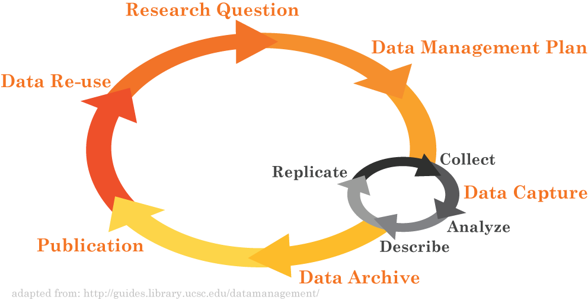
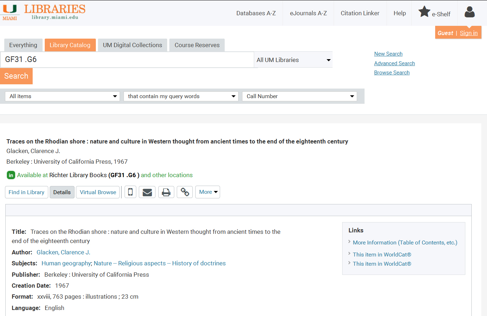
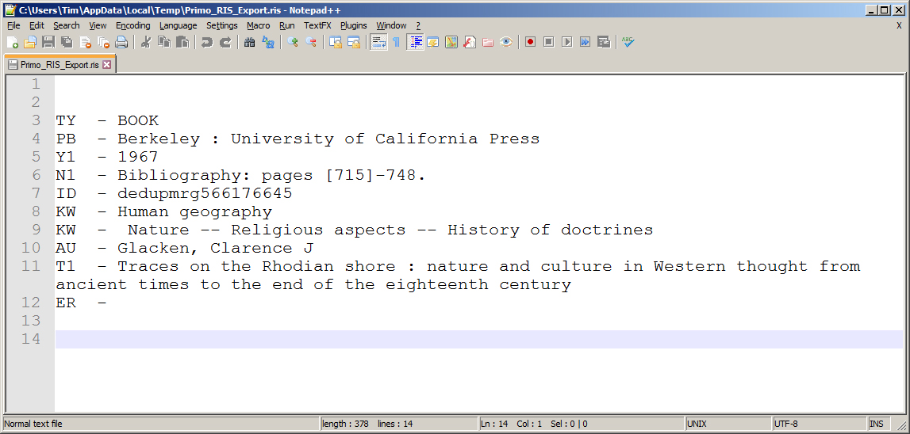

Data Curation
for liaison librarians
Tim Norris - tnorris@miami.edu
Fall 2016 Library Seminars
Fall 2016 Library Seminars
Data Repositories
“Sharing data from one laboratory to another—or even within a laboratory—takes time and effort, but there are also psychological, cultural and technological barriers to doing so.”
| Sharing analysis scripts and data sets | Frequency | percent (valid) |
| 1. Willing to share publicly | 120 | 25.9% |
| 2. Willing to share under access control | 98 | 21.1% |
| 3. Willing to share only on request | 163 | 35.1% |
| 4. Not willing to share | 83 | 17.9% |
| Sum | 464 | 100% |
| Source: SOEP User Survey 2013, own calculations | ||
adapted from doi:10.1371/journal.pone.0118053.t005
Age
Control
Resource
Returns
Discipline
Control
Resource
Returns
Discipline
To Archive Data
- Data selection or appraisal
- Format selection
- Perform checksums
- Select archive location
- Periodic file- and bit-level audits
1. Data Appraisal
“… the process of distinguishing records of continuing value from those of no further value so that the latter may be eliminated.”
The National Archives (UK)
Appraisal roles and responsibilities
Researcher (‘data creator’)
|
Data center or repository
|
Appraisal criteria
- Relevance to mission
- Historical value
- Uniqueness
- Potential for redistribution
- Non-replicability
- Economic case
- Full documentation
Whyte, A. & Wilson, A. (2010). "How to Appraise and Select Research Data for Curation". DCC How-to Guides. Edinburgh: Digital Curation Centre.
http://www.dcc.ac.uk/resources/how-guides, also http://www.dcc.ac.uk/resources/how-guides/five-steps-decide-what-data-keep
http://www.dcc.ac.uk/resources/how-guides, also http://www.dcc.ac.uk/resources/how-guides/five-steps-decide-what-data-keep
2. File Formats
Recomended Formats for Long-term Access and Sharing
Best file format?????
Recomended Formats for Long-term Access and Sharing
Non-proprietary – no software purchase to open the file
Lossless – uncompressed with all of the original data
Indexable – if possible a plain text format that is both human and machine readable
Lossless – uncompressed with all of the original data
Indexable – if possible a plain text format that is both human and machine readable
Best file format?????
PAPER!
2. File Formats
character encoding??? UTF-8
character encoding??? UTF-8
ASCII – American Standard Code for Information Interchange
UTF-8 – Universal Coded Character Set + Transformation Format – 8-bit
[ old school, 128 characters in 7 bits ]
lowercase “j” would become binary 01101010 and decimal 106
UTF-8 – Universal Coded Character Set + Transformation Format – 8-bit
[ now the new standard, only since about 2007, first 128 characters are ASCII ]
[ encodes 1,112,064 “code points” or characters ]
[ encodes 1,112,064 “code points” or characters ]
3. Checksums
Fastsum
Md5sum
- http://www.fastsum.com/
- Command line is free, basic GUI interface $15
Md5sum
- built into bash shell
% md5sum
% man md5sum
4. Select archive location
Considerations
|
Locations
|
adapted from Whitmire, Amanda L. (2014). Research Data Management Curriculum, Lecture 15: Data Preservation. Oregon State University Libraries. Retrieved 11/04/2015 from: http://figshare.com/articles/GRAD521_Research_Data_Management_Lectures/1003835
Dealing with Data Repositories
- datacite.org and re3data.org
- File Formats
- Metadata
- Open data and licensing
- Create and deposit a data package
2. Metadata: Describing Data
- Describing Data (who, what, standards, etc.)
- Describing metadata
A love letter to the future
"Scientific metadata provide the information necessary for investigators separated by time, space, institution or disciplinary norm to establish common ground." - Christine Borgman
Edwards, Mayernik, Betcheller, Bowker, and Borgman (2011). Science friction: Data, metadata, and collaboration. Social Studies of Science 41(5): 667-690. http://dx.doi.org/10.1177/0306312711413314

Research Data Cycle
Working with data
- When you provide data to someone else, what types of information would you want to include with the data?
- When you receive a dataset from an external source, what types of details do you want to know about the data?
DataONE Education Module: Lesson 07: Metadata. DataONE.
https://www.dataone.org/education-modules
https://www.dataone.org/education-modules
Working with data
Providing data
|
Receiving data
|
DataONE Education Module: Lesson 07: Metadata. DataONE.
https://www.dataone.org/education-modules
https://www.dataone.org/education-modules
What is Metadata?
Metadata is data 'reporting'
Metadata is data 'reporting'
- WHO created the data?
- WHAT is the content of the data?
- WHEN were the data created?
- WHERE is the data geographically?
- HOW were the data developed?
- WHY were the data developed?
DataONE Education Module: Lesson 07: Metadata. DataONE.
https://www.dataone.org/education-modules
https://www.dataone.org/education-modules
Metadata you already know

Human readable
Metadata you already know

Machine readable
Describing Metadata
Descriptive
Structural
Administrative
- Project: Describe the overall project (author, date, place, etc.)
- Technical: Describe individual project elements (tables, column headers, etc.)
Structural
- Describe how different elements of the data(set) fit together
Administrative
- Rights Management
- Preservation
National Information Standards Organization (NISO) (2004). Understanding Metadata.
http://www.niso.org/publications/press/UnderstandingMetadata.pdf
http://www.niso.org/publications/press/UnderstandingMetadata.pdf
Standards and Schemas
Idea of standardized set of elements
Dublin Core
- Minimal to maximal, depends on purpose, audience, domain, and structure
Dublin Core
- One of the most common – not Dublin Ireland
- Used as a starting point for many other schema
The Dublin Core Metadata Element Set is a vocabulary of fifteen properties for use in resource description. The name "Dublin" is due to its origin at a 1995 invitational workshop in Dublin, Ohio; "core" because its elements are broad and generic, usable for describing a wide range of resources.
DC
Title
Creator
Subject
Description
Publisher
Contributor
Date
Type
Format
Identifier
Source
Language
Relation
Coverage
Rights
Title
Creator
Subject
Description
Publisher
Contributor
Date
Type
Format
Identifier
Source
Language
Relation
Coverage
Rights
DC Example
Title=
Creator=
Creator=
Creator=
Subject=
Description=
Publisher=
Publisher=
Date=
Type=
Format=
Identifier=
Language=
Title=
Creator=
Creator=
Creator=
Subject=
Description=
Publisher=
Publisher=
Date=
Type=
Format=
Identifier=
Language=
”Metadata Demystified”
”Brand, Amy”
”Daly, Frank”
"Meyers, Barbara”
”metadata”
”Presents an overview of metadata conventions in publishing.”
”NISO Press”
”The Sheridan Press”
”2003-07"
”Text”
”application/pdf”
”http://www.niso.org/standards/resources/Metadata_Demystified.pdf”
”en”
Metadata Review
metadata is a description of your data for a future user (you perhaps?)
Two general kinds of descriptive metadata
How will the metadata be captured
What format (with justification)
- What does this person need to know to use the data properly?
- Does this person need discipline specific knowledge? How much?
Two general kinds of descriptive metadata
- Project level (contextual)
- Technical (data level, units, headers, etc.)
How will the metadata be captured
- Notebooks (electronic??)
- Device Capture
What format (with justification)
- Discipline specific standard? Other standard?
- Machine or human readable (both?)
Licensing
- Creative Commons?
for data?
The deposit package
- organized data
- README
- checksum
all in a zip file - perhaps?
Bottom line
No "one-size-fits all" approach
Balance costs, storage quality, access, degree of involvement, security, longevity etc.
Plan ahead so you can budget appropriately (write into grants)
Balance costs, storage quality, access, degree of involvement, security, longevity etc.
Plan ahead so you can budget appropriately (write into grants)

{kind=link}